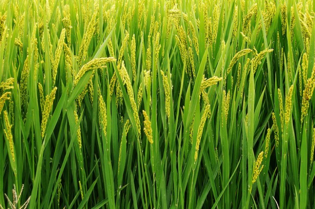
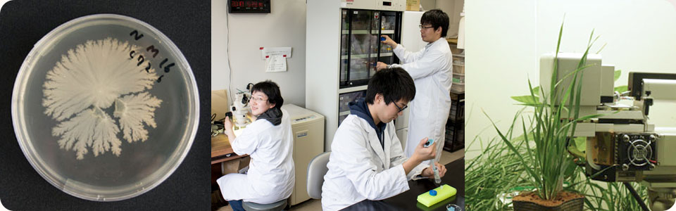

现代生命科学的研究日新月异，新技术新方法层出不穷。在植物学领域，为应对食物，能源，健康以及环境和资源方面挑战，新的科研成果正在不断更新我们对植物生命活动规律的认识，更加有利于我们开发，利用和保护地球的植物资源。 植物的形态变化，生理现象和病虫抵御是对环境变化的进化适应，其内在包含一系列的信号传导，基因表达，反馈调节以及代谢反应等分子事件，其关键则赖于各种特定功能蛋白分子在特定的时间，空间的顺序表达以及它们之间的相互作用。所有的分子事件都在细胞内特定的区隔内进行，其结果就是细胞的分裂分化，生长成熟，衰老自亡。 作为是从事细胞与基因工程基础理论和应用研究以及相关人才培养的基地，分子细胞生物学实验室应用现代最新的技术手段去探究生命现象从分子，细胞到个体乃至群体多重层面的网络调控机制。与此同时，充分利用生物信息时代的大量生物学数据库及算法模型，开展在系统整合生物学这一现代新兴学科领域的研究。因此，分子细胞与系统生物学中心将面向21世纪生命科学的发展趋势，以赶超生命科学国际发展前沿，探索与解决国家和福建省经济社会发展面临的重大科学技术问题为目标开展工作。 目前分子细胞与系统生物学中心的主要研究方向包括：植物组学研究、植物细胞信号传导，细胞与基因工程药物与产品的开发及其产业化以及系统生物学手段的应用。 中心除了承担本科生创新科研项目，将拟承担国家“973”重大基础研究计划、 国家自然科学基金重点项目、 国家自然科学基金和各类省部级项目、企业合作项目等。我们还与浙江大学，厦门大学，中科院上海生理和生态研究所，德国基尔大学，德国蒂宾根大学，国立台湾大学等存在直接课题合作。
一 分子细胞生物学 1. 植物衰老与细胞死亡的分子机理 2. 逆向信号传导在植物生长发育中的分子调控 3. 园艺作物（油菜、竹子和花卉）生长发育的分子生物学研究 4. 双诱导重组无标记基因编辑体系在作物分子育种中的应用 二 细胞生物工程 1. 海洋生物活性肽及其生物工程技术 2. 细胞工程标记筛选技术 3. 植物生物技术在中草药性状品质改良的应用研究。
1、植物组学研究 （1）模式植物拟南芥细胞器转录组与蛋白组的研究； （2）园艺作物如果树、蔬菜与花卉的特别农艺性状的转录组、蛋白组的研究。 2、植物细胞信号传导研究 （1） 双定位转录因子在植物发育中的细胞功能研究； （2） 叶绿体和线粒体作为环境信号的感受体通过逆行信号( retrograde signalling )调控植物衰老和细胞程序性死亡研究。 3、细胞与基因工程药物的研制开发与产业化 围绕福建省建设生物医药大省的发展目标，重点在细胞与基因工程领域开展新药（生物制剂）的研制开发和新的生态环保型转基因产品的开发。内容包括： （1）海洋生物药物资源研究开发与细胞工程 和德国基尔大学药物研究所合作利用海洋细菌，培养提取抗癌药物的研究和可能的产业化； （2）重要生物物质和代谢物的提取与分析； （3）植物生态环保型基因编辑体系的建立与应用。 主要着眼于我省特色园艺作物，蔬菜和花卉品种的多元化和特色品系的培养与开发，生态环保型基因编辑系统的应用将开辟国内生态环保型分子育种的新理念，社会和生态效益不可估量。 4、 系统生物学手段的应用 基于转录组，蛋白组，代谢组以及表型组的系统生物学分析结果，进行福建特色作物特异性状的分子育种及其分子种质库的建立。 查看更多
